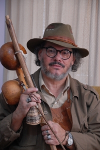

“Capoeira is the Brazilian peoples’ wisdom”
Первая версия этого текста появилась в декабре 2008 года, после инцидента с Местре Анголейро и последующей беседы с ним, в которой мы обсудили некоторые опасности традиционалистского подхода к капоэйре.
Позже я встретил новых друзей, эти разговоры вновь всплыли, и я понял, что статья эта уместна как никогда.
Итак, вот моя пересмотренная версия.
«Капоэйра – это мудрость бразильского народа». Mestre Angoleiro (J. Bamberg), ученик Местре Бимбы, рассказывал, что именно такое определение капоэйре давал его учитель. Mestre Angoleiro также рассказал нам, что его раздражают „новые традиции“ в капоэйре. Вот славный малый!
Примерно год назад Mestre Angoleiro пришел на одно мероприятие капоэйры со своей виолой. Перед родой к нему подошел один из организаторов и сказал: «Местре, вот Вам гунга». Мастер настаивал на том, что хочет играть на своем инструменте, на своей виоле, после чего последовал такой ответ: «В этой группе по правилам Роду ведет гунга, и так как Вы здесь самый опытный и взрослый Мастер, Вы должны играть на гунге». Мастер не взял ни один инструмент, не спел ни одной песни. Он немного покачал жингу за пределами Роды, терпеливо дождался окончания мероприятия, поблагодарил всех и ушел.
Кажется, что люди с особыми взглядами, как Местре Анголейро, притягивают такие ситуации. Но согласно их опыту, без комментария к ситуации, никто бы в ней ничего не понял и не увидел. Реплика Местре по этому поводу была как раз из таких перлов: „Только в голове этих идиотов нечто (например, беримбау гунга) может быть важнее, чем мудрость и опыт мастера“.
Эта история привлекла внимания к «переписыванию традиций капоэйры», как иронично выразился об этом Местре Анголейро, или, если выражаться проще, к «выдумыванию традиций» — этот термин известен среди ученых-культурологов. Но что именно имеется в виду и какое это имеет отношение к нашим занятиям капоэйрой? Что ж, оказывается, большинство традиций, которые кажутся древними, на деле являются относительно новыми и даже недавно придуманными и выдаются за старые. Под вымышленными традициями подразумевается набор практик, ритуальных или символичных, которые пытаются внушить определенные ценности и нормы поведения путем повторения, что автоматически предполагает некую связь с подходящей частью прошлого, и потому легко выдается за традицию.
Довольно просто понять, какое это имеет отношение к людям, практикующим капоэйру, достаточно нескольких вопросов, уточняющих, что именно эти „вымышленные традиции“ призваны поддержать, какие идеи подкрепить. К примеру: «ЧТО за ценности они пропогандируют?», «КТО и кому хочет внушить эти ценности и какую выгоду надеется из этого получить?», „ПОЧЕМУ эти люди выдумывают традиции?“.
Часто, хотя и не всегда, ярые ортодоксы стремятся внушить идеи аутентичности, оригинальности, заявляют, что они берегут и охраняют определенную преемственность традиций. Главная проблема заключается в группе мастеров, идущих по линии Бимбы или Паштиньи, которые развивают традиционный дискурс, стремясь обесценить деятельность других школ и преемственных линий. Так как, по общему мнению, они – те самые люди, которые были свидетелями прошлых поколений капоэйры, эти несколько радикалов тем самым унаследовали необходимый авторитет, чтобы диктовать, какой была капоэйра в своем мифическом прошлом, и что в ней аутентично или наоборот – чего не существовало по их свидетельству.
Искусственным вымыслом традиций эта группа якобы «традициональных» мастеров последовательно подделывает прошлое капоэйры. Будучи очень строгими и уверенными в себе и в правилах и ритуалах, о которых они рассказывают, мастера передают своим студентам идею справедливой охраны традиций прошлого, «аутентичного» знания, таким образом пытаясь узаконить „культурное наследие“, которым владеют.
По мне, так худший результат таких махинаций – это традиционализм – смещение от мудрых, естественных и органичных, антропоцентричных действий скромных и честных мастеров прошлого, к набору догм и правил, выгодных этой банде новоявленных приверженцев традиций. Это смещение может вовлечь нас в процесс, где настоящий смысл капоэйры – мудрость бразильского народа – будет замещен слепыми догмами. Вот так получается, что традиции и ритуалы, которые должны были поддерживать мудрость и культурное богатство капоэйристов, стали причиной конкуренции, сепаратизма и деспотического разрушения. Вот как капоэйристов стали «приручать» и приучать развивать интересы конкретной группы вместо того, чтобы развивать знание о капоэйре в широком смысле, о принадлежности к капоэйре, к человеческой породе.
Как бы сказал Местре Анголейро: «Это рыночная капоэйра, парень! Это не Капоэйра!». По сути дела, это организованное движение, созданное несколькими „мастерами“, для оправдания их строгого поведения в отношении наследования традиций и соответственно завоевании рынка с помощью своего авторитета.
Те же (и такие еще есть!), кто способен преподавать капоэйру со скромностью, ответственностью и преданностью, фокусирует свое внимание на людях, а не на догмах. На процессе передачи знаний, а не на том, что тренировки ведут они – «настоящие Местре». Я уверен, что такие люди учат своих студентов вести себя так же. Конечно, у этих ребят тоже есть свои ритуалы, свои методы преподавания, каждый ведет в своей манере, но всегда с желанием передать свою интуицию, мудрость, знание и опыт капоэйры последователям.
Посмотрим на примеры мудрых мастеров и их непосредственной, искренней капоэйры. Уже ушедший от нас Mestre Iziaqiel, ученик Бимбы, проводил роды, исполняя шулы под пандейро, а вовсе не корридосы под беримбау, как можно было бы ожидать от человека с его прошлым. Наш современник, Местре Жоао Пекену, из-за своего возраста ведет роду, держа лишь бакету в руке, для чего он реорганизовал всю свою charanga (старое название батерии, куда входит полный набор инструментов капоэйры). Местре Жоао Гранджи в своей школе придерживался белого цвета в одежде для занятий, невзирая на традицию Паштиньи носить черно-желтую одежду в знак почтения местной футбольной команды «Ипиранга». Ныне покойный Mestre Paulo dos Anjos активно продвигал в своей школе вечеринки после батизады. Все эти люди – великие мастера, известные и уважаемые. Все они внесли некие изменения в методику преподавания своих учителей, добавили в них свой собственный опыт и видение, при этом продолжая учение своих предшественников.
Тем не менее, все они считаются настоящими хранителями мудрости и знания Капоэйры. Они заняли место в своей линии преемственности с гордостью и уважением и передают свое наследие с почтением и вдохновением, не обращая внимания на фальшивую шкалу авторитетов. Наконец, никто из них не делает из своего видения капоэйры догму, не учит без обращения к собственному опыту, без того, чтобы пропустить знание через себя. Люди могут принять их поведение как раз за следование традициям, но то, чему учат они, может в точности не совпадать с тем, чему учили в прошлом, как учили. Это так же не означает, что стиль преподавания этих мастеров более или менее аутентичен, чем в других школах.
За годы такой работы, исполняемой с полной отдачей и обязательствами, эти мудрые мастера передали свой унаследованный культурный, а также жизненный опыт следующим поколениям, чтобы те были вооружены им, как мощным оружием, против гнета мэйнстрима.
Я уверен в том, что эти прекрасные люди, которые сделали капоэйру духовной и философской практикой, а не карьерой, никогда не поставят свои традиции и ритуалы выше образования и хороших манер, а тренировки — выше получения образования. Прежде чем слепо отдаться какому-то ритуалу или традиции, мы должны обратиться к древней мудрости, к философским основам, с их равноправными и благородными ценностями.
Мы должны бы остерегаться той скорости, с какой меняется мир капоэйры. Мы должны спросить себя: „Кому выгодны эти изменения?“. И если эти изменения не в пользу капоэйру, не ради них, а ради беспорядка и разрушения, мы должны восстать против них!
Знание должно порождать мудрость и цель служения всем, должно освободить угнетаемых, быть выше всего и способствовать солидарности. Как бы сказал Местре Клаудио Данадиньо, профессор и архитектор, один из основателей группы Сензала: «Капоэйра – это метод подготовки к самой жизни, дорога к мировому счастью и радости».
Автор — C. M. Eurico
4capoeirathoughts.com
Перевод — Botafogo